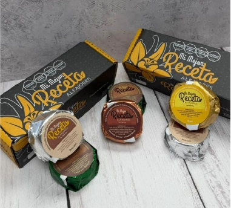
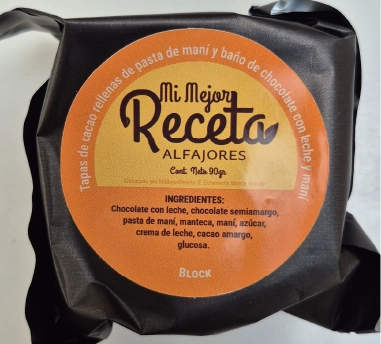
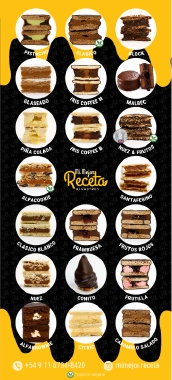
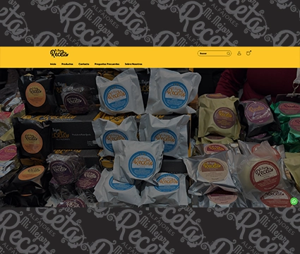
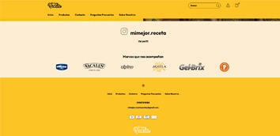
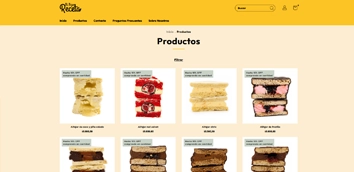
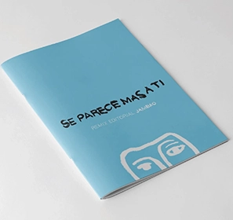
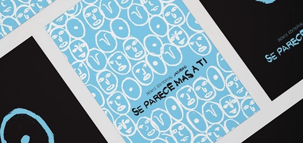
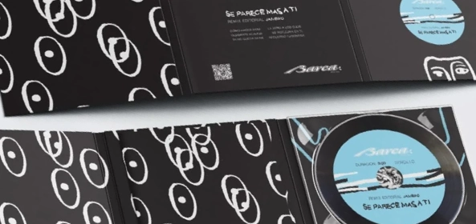
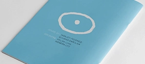

PROYECTOS DESTACADOS






Soy diseñador gráfico enfocado en la creación de piezas visuales, identidad gráfica y comunicación visual.
En este porfolio presento algunos de mis proyectos académicos y profesionales, explorando diferentes áreas del diseño y buscando soluciones visuales claras, funcionales y atractivas.
LIBRO INTERACTIVO
Cargando libro…

Soy diseñador gráfico enfocado en la creación de piezas visuales, identidad gráfica y comunicación visual.
En este porfolio presento algunos de mis proyectos académicos y profesionales, explorando diferentes áreas del diseño y buscando soluciones visuales claras, funcionales y atractivas.

Soy diseñador gráfico enfocado en la creación de piezas visuales, identidad gráfica y comunicación visual.
En este porfolio presento algunos de mis proyectos académicos y profesionales, explorando diferentes áreas del diseño y buscando soluciones visuales claras, funcionales y atractivas.

